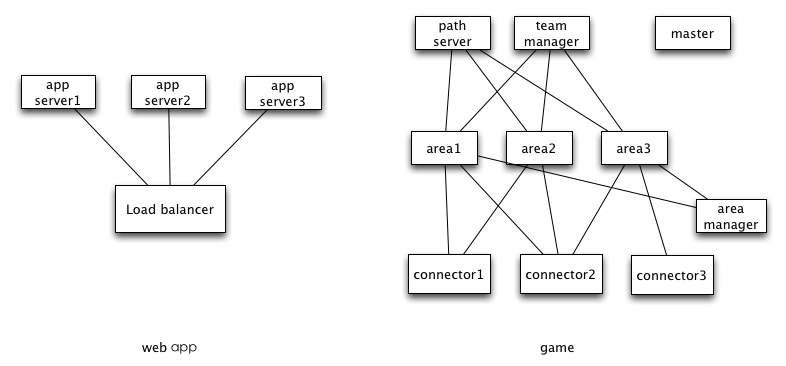
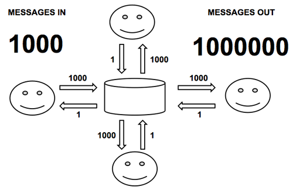

Pomelo的设计动机
Clone this wiki locally
pomelo最初的设计初衷是为了游戏服务器， 不过在设计、开发完成后发现pomelo是个通用的分布式实时应用开发框架。下面将结合实际，从游戏服务器的需求，以及开发中面临的问题等方面阐述pomelo的设计动机。
游戏服务器概述
没开发过游戏的人会觉得游戏服务器是很神秘的东西。但事实上它并不比web服务器复杂，无非是给客户端提供网络请求服务，本质上它只是基于长连接的socket服务器。当然在逻辑复杂性、消息量、实时性方面有更高的要求，下面从web服务器与游戏服务器的对比中来说明游戏服务器的一些特点：
复杂的socket服务器
如果说web服务器的本质是http服务器，那么游戏服务器的本质就是socket服务器。 它利用socket通讯来实现服务器与客户端之间的交互。事实上有不少游戏是直接基于原生socket来开发的。 相对于简单的socket服务器，它承受着更加繁重的任务：
- 后端承载着极复杂的游戏逻辑。
- 网络流量与消息量巨大，且实时性要求高。
- 通常一台socket服务器无法支撑复杂的游戏逻辑，因此往往使用一个服务器集群来提供服务。
长连接和实时响应
web应用都是基于request/response的短连接模式,占用的资源要比一直hold长连接的游戏服务器要少很多，因此web应用可以使用基于http的短连接来达到最大的可扩展性，Web应用能使用短连接模式的原因如下：
- 通讯的单向性，普通web应用一般只有拉模式
- 响应的实时性要求不高，一般web应用的响应时间在3秒以内都算响应比较及时的。
而游戏应用只能使用长连接，原因如下：
- 通讯的双向性，游戏应用不仅仅是推拉模式，而且推送的数据量要远远大于拉的数据量
- 响应的实时性要求极高，一般游戏应用要求推送的消息实时反应，而实时响应的最大时间是100ms。
分区策略与负载均衡
普通的web应用在交互上没有相邻性的概念，所有用户之间的交互都是平等，交互频率也不受地域限制。 而游戏则不然，游戏交互跟玩家所在地图（场景）上的位置关系非常大，如两个玩家在相邻的地方可以互相PK或组队打怪。这种相邻的交互频率非常高，对实时性的要求也非常高，这就必须要求相邻玩家在分布在同一个进程里。于是就有了按场景分区的策略，如图所示：

一个进程里可以有一个场景，也可以有多个场景。这种实现带来了游戏的可伸缩性受到场景进程的限制，如果某个场景过于烦忙可能会把进程撑爆，也就把整个游戏撑爆。场景服务器是有状态的，每个用户请求必须发回原来的场景服务器。服务器的有状态带来一系列的问题：场景进程的可伸缩，高可用性等都比不上web服务器。目前只能通过游戏服务器的隔离来缓解这些问题。
web应用的分区可以根据负载均衡自由决定， 而游戏则是基于场景(area)的分区模式， 这使同场景的玩家跑在一个进程内， 以达到最少的跨进程调用。
可伸缩性与分布式开发
不管是web应用还是游戏服务器，可伸缩性始终是最重要的指标，也是最棘手的问题，它涉及到系统运行架构的搭建，各种优化策略。 只有把可伸缩性设计好了，游戏的规模、同时在线人数、响应时间等参数才能得到保证。最初的网络服务器是单进程的架构，所有的逻辑都在单台服务器内完成， 这对于同时在线要求不高的游戏是可以这么做的。由于同时在线人数的上升， 单服务器的可伸缩性必然受到挑战。随着网络游戏对可伸缩性要求的增加，分布式是必然的趋势的。 下面是一个web服务器和游戏服务器架构对比的示意图：

可以看到由于web服务器的无状态性，只需要通过前端的负载均衡器可以导向任意一个进程，因此运行架构相对简单， 而且很少需要分布式开发。
而游戏服务器是蜘蛛网式的架构，每个进程都有各自的职责，这些进程的交织在一起共同完成一件任务。因此游戏服务器是一个标准的分布式开发架构。
开发难点
从上面的分析可知，游戏服务器是蜘蛛网式的架构，每个进程都有各自的职责，这些进程的交织在一起共同完成一件任务。这些需求也决定了游戏服务器开发的难度。这些难题有：
实时性保证
对实时游戏服务器来说，常见的实时性很高的任务有：
实时Tick
实时游戏的服务端一般都需要一个定时tick来执行定时任务，为了游戏的实时性，一般要求这个tick时间在100ms之内。这些任务一般包括以下逻辑:
- 遍历场景中的实体(包括玩家、怪物等)，进行定时操作，如移动、复活、消失等逻辑。
- 定期补充场景中被杀掉的怪的数量。
- 定期执行AI操作，如怪物的攻击、逃跑等逻辑。
由于实时100ms的限制，这个实时tick的执行时间必须要远少于100ms。
广播
由于玩家在游戏里的行动要实时地通知场景中的其它玩家， 必须通过广播的模式实时发送。这也使游戏在网络通信上的要求高于web应用。 游戏中广播的代价是非常大的。玩家的输入与输出是不对等的，玩家自己简单地动一下，就需要将这个消息实时推送给所有看到这个玩家的其他玩家。 假如场景里面人较少，广播发送的消息数还不多，但如果人数达到很密集的程度，则广播的频度将呈平方级增长。如图所示：

假如场景中1000个玩家，每人发1条消息，如果需要其它玩家都看到的话，消息的推送量将高达1,000,000条，这足以把任何服务器撑爆。
分布式开发
几乎在很多书、演讲和文章中都可以看到这样的观点： 分布式开发是很难的，分布式开发的难点主要有：
多进程（服务器）的管理
通常的游戏服务器要由很多进程共同去完成任务。当这些进程交织在一起的时候，多进程的管理并不那么容易。
如果没有统一的抽象与管理，光把这些开发环境的进程启动起来就是非常复杂的工作， 进程的启动与重启就将严重影响开发效率。 重量级的进程消耗大量的机器资源，普通的开发机支撑不了那么多进程，可能一个人的开发环境就需要多台机器。 多进程间的调试并不容易， 我们发现一个bug就要跨好几个进程。
rpc调用
rpc调用的解决方案已经有n多年的历史了，但rpc在分布式开发效率上仍然没有明显提升。 以当前最流行的开发框架thrift为例，它在调用代码前需要经过以下步骤：
- 写一个.thrift文件
- 从.thrift文件生成源码
thrift --gen <language> <thrift_filename>
- 在程序中使用生成的源码 如果发生接口改动，我们又需要重新修改描述文件，重新生成stub接口。对于接口不稳定的开发环境， 这种方式对开发效率影响较大。要想让rpc调用的开发达到最简，不需生成stub接口， 无需描述文件， 我们需要一种很巧妙的方法。
分布式事务、异步化操作
尽管我们尽量把逻辑放在一个进程里处理，但分布式事务仍然是不可避免的。两阶段提交的代码，异步化的操作在普通的开发语言里并不是容易的事。
负载均衡，高可用
由于游戏服务器的有状态性，很多请求需要通过特定的路由规则导到某台服务器；对于有些无状态的服务器，我们则可以把请求路由到负载最低的服务器。通常对于无状态的服务器， 高可用是比较好做的。对于有状态的服务器，要做高可用会非常困难， 但也不是完全没有办法，常见的两招：
- 将状态引出到外存
例如redis， 这样进程本身就可以无状态了。但由于所有的操作都通过redis可能带来性能损耗，有些场景是不能承受这些损耗的。
- 通过进程互备
将状态通过日志等方式同步到另一进程， 但这可能存在着瞬间数据丢失的问题，这种数据丢失在一些应用场景可能毫无问题， 但在另外一些应用场景可能引起严重的数据不一致。
有状态的高可用并不是那么好实现的，pomelo在0.5版本提供高可用的实现机制，引入zookeeper和redis可以解决一些进程（如master）的高可用问题，但真正复杂的应用场景的逻辑只能由应用自己处理。
原生socket开发的问题
除了上述所讲的分布式开发方面存在的难点外，使用原生的socket开发也会有很多问题：
- 抽象程度
原生的socket抽象程度过低，接口过于底层，很多机制都需要自己封装，如Session、filter、请求抽象、广播等机制都要自已实现，工作量很大，容易出错，且有很多的重复劳动。
- 可伸缩性
高可伸缩性需考虑很多问题，消息密度、存储策略、进程架构等因素都需要考虑。用原生的socket要达到高可伸缩性，需要在架构上花费大量的功夫，而且效果也未必能达到开源框架的水准。
- 服务端的监控管理
很多服务器的数据需要监控，例如消息密度、在线人数、机器压力、网络压力等，如果采用原生socket，所有这些都要自己开发，代价很大。
基于框架的解决方案
是的，我们需要一个框架来简化开发游戏服务器的工作。除了游戏自身的逻辑外，大部分的工作都可以用框架来解决。服务端的抽象，可伸缩性，可扩展性这些问题都可以通过框架来解决，避免了开发者重复实现一些通用的机制。游戏服务器框架也承担了应用服务器的功能，可以把框架看成容器，只要把符合容器标准的代码扔进去，容器就运行起来了。同时，它自然具备了抽象能力、可伸缩性和监控、管理等能力。
已有游戏服务器框架介绍
在开源社区里充斥了数不清的web服务器框架，游戏客户端的框架和库也有一大堆，但唯独游戏服务器框架少之又少，零星有一些类库，但完整的解决方案几乎没有。我们只好从商用的解决方案中拿出一些框架进行类比：
- Sun RedDwarf
RedDwarf是唯一一个能找到的完整的开源游戏服务器框架，由sun出品。可惜在它合并到Oracle以后已经停止开发了。 在设计上，RedDwarf是个分布式架构，它在分布式数据存储和任务管理上投入了太多精力，而且做的过于理想化，如动态任务迁移功能的实现非常复杂，但实际应用中根本用不到。而在可伸缩性和性能的设计上不太理想。因此RedDwarf夭折了。
- SmartfoxServer
SmartfoxServer是由意大利的一家游戏公司gotoAndPlay()推出的商用游戏服务器。 它是基于java开发的，与web应用服务器如Tomcat看上去很类似。Smartfox支持各种客户端，且有一些成功案例。它在服务端封装和监控管理方面实现得很完善。 但在可伸缩性上并不是太理想，尽管Smartfox也支持Cluster模式，但它的扩展方式是基于jvm内存复制的。也没有实现传统MMORPG基于场景分区的解决方案。 Smartfox有免费版本，但完全不开源。而且它的免费版本(达不到高并发用户要求)很大程度是为了吸引开发者最终购买它的收费版本。不限在线人数的收费版本价格达到3500美刀。
- BigWorld
Bigworld是澳大利亚Bigworld公司开发的全套3d MMORPG游戏解决方案，解决方案包含了客户端和服务端。Bigworld功能非常强大，在动态负载均衡和容错性做了很多工作。可扩展性非常强大。 它的缺点是过于重量级，对硬件要求高，且价格非常昂贵。Bigworld是专门为3d MMORPG游戏定制，但并不适用于中小型游戏的开发。
pomelo解决方案
针对目前游戏服务器框架产品市场的情况，没有适用于中小型游戏开发的框架，我们推出了pomelo框架，它是基于node.js开发的高性能、可伸缩、轻量级游戏服务器框架，使用MIT开源协议发布。它基本解决了游戏服务器开发中的难点，使得游戏服务器的开发变得简单。与其他的类似的框架相比，它的主要优势有以下几点：
- 开发模型快速、易上手，基于convention over configuration的原则，让代码达到最大的简化。
- 架构的可伸缩性和可扩展性好，pomelo在服务器扩展和应用扩展上实现得非常方便。
- 轻量级，虽然是分布式架构，但启动非常迅速，占用资源少。
- 参考全面，框架不仅提供了完整的中英文档，还提供了完整的MMO demo代码(客户端使用了HTML5)，可以作为很好的开发参考。
为什么选择node.js
在讲了这么多分布式开发的难点之后，引入node.js实在是太自然了，它天生的异步编程模型解决了分布式开发的很多问题：
- 天生的分布式
node.js之所以叫node就是因为它天生就是做多进程开发的， 多个节点(node)互相通讯交织在一起组成的分布式系统是node天生就应该这么干的。它的编程模式里天生就是这种模式，两阶段提交、异步化操作这些看似复杂的工作里在node.js只是一个正常的异步执行流程。例如前面提到的分布式事务、异步化操作在node.js里只是个正常的流程。
- 单线程的应用模型
node.js的单线程处理能力远比其它语言强大，而单线程处理游戏逻辑是最简单，最不容易出错，而且不可能出现死锁、锁竞争的情况。
- 网络io与可伸缩性的优势
游戏是非常io密集型的应用， 采用node.js是最合适的， 可达到最好的可伸缩性。虽然有很高的可伸缩性，却并没有因此损失性能。node.js生来就是为io而生的，而游戏服务器刚好是网络密集型的应用。node.js的网络编程接口简单，抽象程度高。
- 语言优势
javascript语言已经不是昔日的吴下阿蒙，使用javascript开发可以实现快速迭代。它不仅由于脚本语言的轻量、简单带来了开发效率的提升，还可以与一些类型的客户端共享部分代码，如html5，unity3d的js客户端等。另外，语言的动态性带来了很多框架设计的便利，如设计DSL，实现convention over configuration。尽管这方面比ruby稍差，但在pomelo框架中使用已经足够好了。
从游戏框架到实时应用框架
当我们分析完pomelo框架的设计目标时， 我们发现核心框架的这件事情竟然与游戏没有任何关系。这是一个通用的实时分布式应用开发框架。官网上的聊天服务器demo就是一个实时应用。 事实上pomelo已经被应用在很多非游戏领域。 网易的消息推送平台是基于pomelo开发的，它承担了网易移动端和web端的消息推送， 目前已经上线使用。
总结
本文首先分析了游戏服务器的特点，从而得出相对于web服务器来讲，游戏服务器由于其自身的复杂性所带了的开发难点，分析了现有游戏服务器框架的不足，阐述了设计pomelo的动机。下面是对pomelo框架的介绍。